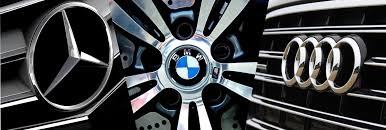

Mercedes-Benz (German pronunciation: [mɛʁˌtseːdəs ˈbɛnts, -dɛs -] ⓘ),[6][7] commonly referred to simply as Mercedes and occasionally as Benz, is a German luxury and commercial vehicle brand that was founded in 1926. Mercedes-Benz AG (a subsidiary of the Mercedes-Benz Group, established in 2019) is based in Stuttgart, Baden-Württemberg, Germany.[1] Mercedes-Benz AG manufactures luxury vehicles and light commercial vehicles, all branded under the Mercedes-Benz name. From November 2019 onwards, the production of Mercedes-Benz-branded heavy commercial vehicles (trucks and buses) has been managed by Daimler Truck, which separated from the Mercedes-Benz Group to form an independent entity at the end of 2021. In 2018, Mercedes-Benz became the world’s largest premium vehicle brand, with a sales volume of 2.31 million passenger cars.[8] The roots of the brand trace back to the 1901 Mercedes by Daimler-Motoren-Gesellschaft and the 1886 Benz Patent-Motorwagen by Carl Benz, which is widely recognized as the first automobile powered by an internal combustion engine. The brand’s slogan is "The Best or Nothing".[9]
Bayerische Motoren Werke AG, trading as BMW Group (commonly abbreviated to BMW (German pronunciation: [ˌbeːʔɛmˈveː] ⓘ), sometimes anglicised as Bavarian Motor Works), is a German multinational manufacturer of luxury vehicles and motorcycles headquartered in Munich, Bavaria, Germany. The company was founded in 1916 as a manufacturer of aircraft engines, which it produced from 1917 to 1918 and again from 1933 to 1945 creating engines for aircraft that were used in the Second World War. The companies automobiles are marketed under the BMW, Mini and Rolls-Royce brands, and motorcycles are marketed under the BMW Motorrad brand. Also in 2023, BMW was the world's ninth-largest producer of motor vehicles, with 2,555,341 vehicles produced[3] and in 2023 the 6th largest by revenue.[4] In 2023, the company was ranked 46th in the Forbes Global 2000.[5] The company has significant motor-sport history, especially in touring cars, sports cars, and the Isle of Man TT. BMW is headquartered in Munich and produces motor vehicles in Germany, the United Kingdom, the Netherlands (ceased in 2023),[6] the United States, Brazil, Mexico, South Africa, India and China. The Quandt family [de] is a long-term shareholder of the company, following investments by the brothers Herbert and Harald Quandt in 1959 that saved BMW from bankruptcy, with the remaining shares owned by the public.
Audi AG (German: [ˈaʊ̯di ʔaːˈɡeː] ⓘ) is a German automotive manufacturer of luxury vehicles headquartered in Ingolstadt, Bavaria, Germany. A subsidiary of the Volkswagen Group, Audi produces vehicles in nine production facilities worldwide. The origins of the company are complex, dating back to the early 20th century and the initial enterprises (Horch and the Audiwerke) founded by engineer August Horch. Two other manufacturers (DKW and Wanderer) also contributed to the foundation of Auto Union in 1932. The modern Audi era began in the 1960s, when Auto Union was acquired by Volkswagen from Daimler-Benz.[7] After relaunching the Audi brand with the 1965 introduction of the Audi F103 series, Volkswagen merged Auto Union with NSU Motorenwerke in 1969, thus creating the present-day form of the company. The company name is based on the Latin translation of the surname of the founder, August Horch. Horch, meaning 'listen', becomes audi in Latin. The four rings of the Audi logo each represent one of four car companies that banded together to create Audi's predecessor company, Auto Union. Audi's slogan is Vorsprung durch Technik, which is translated as 'Progress through Technology'.[8] Audi, along with German brands BMW and Mercedes-Benz, is among the best-selling luxury automobile brands in the world.[9]
